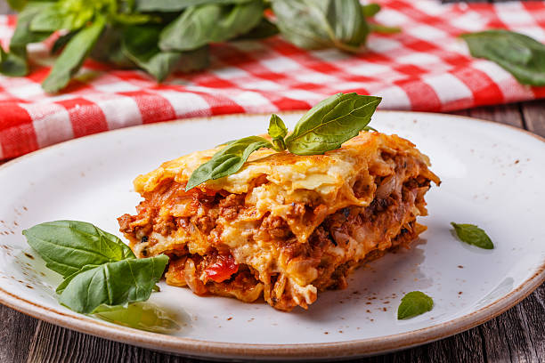

A delicious Italian classic made with layers of tender pasta, rich meat sauce, creamy béchamel, and melted cheese.
This homemade lasagna is baked until golden and bubbly, making it the perfect comfort food for a family dinner or a special occasion.
Heat the olive oil in a pan. Add the chopped onion and cook until soft.
Add the ground beef and cook until browned.
Stir in the tomato sauce, oregano, salt, and pepper. Simmer for 20 minutes.
Preheat the oven to 180°C (350°F).
Spread a layer of meat sauce in a baking dish. Add lasagna sheets, béchamel sauce, mozzarella and Parmesan. Repeat the layers until all the ingredients are used.
Cover the final pasta layer with meat sauce, béchamel, mozzarella, and Parmesan.
Cook for 35-40 minutes, until the top is golden and bubbling.
Allow the lasagna to rest for 10 minutes before serving.
Enjoy your homemade Italian lasagna!